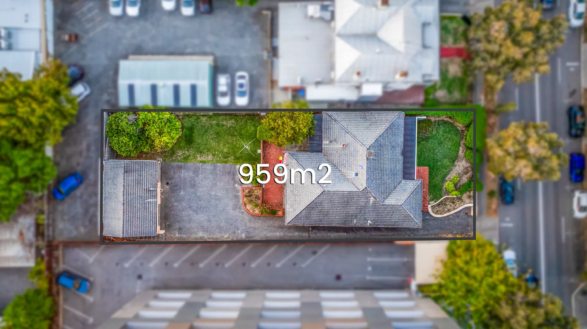
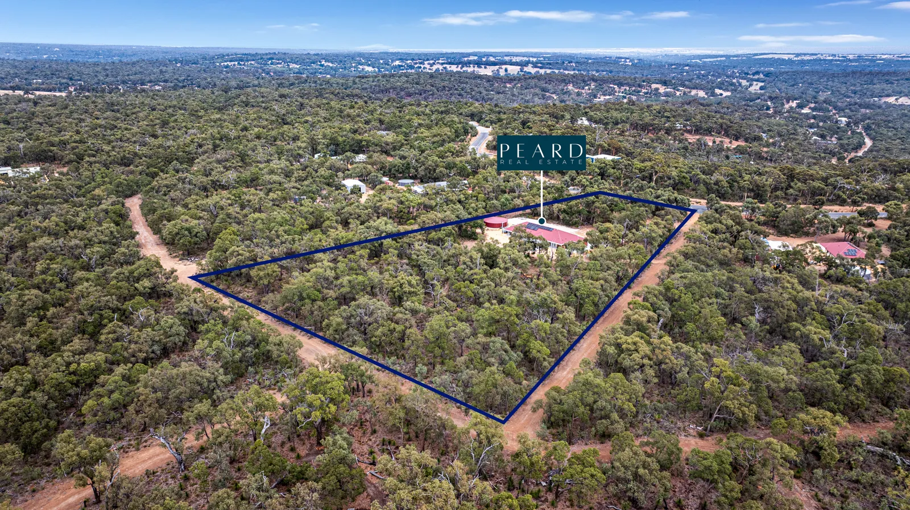

Perth aerial property photography
Drone & Aerial Photography Perth
Five edited aerial images with road overlays and location pins, from $220. Flown under CASA commercial rules, delivered next day, across the whole Perth metro area.
Drone photography for a Perth real estate listing costs $220 with Baker Production and includes five edited aerial images with road overlays and location pins. It is included in the Premium package at $375 with photography and a floor plan. All aerial work is flown under CASA commercial rules and delivered the next day. Prices include GST.
Aerial shots answer the question every buyer asks first
Where is it, what is around it, and how big is the block. Ground-level photography cannot answer any of those. A single well-composed aerial does all three in one image, which is why drone has stopped being a luxury add-on and become standard on anything above entry-level stock.
Perth is unusually well suited to it. The metro area is flat, wide and coastal — a drone shot from Trigg or Scarborough puts the ocean in the frame, one from Applecross or Mount Pleasant puts the river in, and one over Baldivis or Ellenbrook shows a buyer the estate, the parkland and the school in a single pass. Corner blocks, battleaxe blocks and subdividable sites all photograph completely differently from above.
Every aerial set comes back with overlays: arterial roads, the beach, the train station, the shopping centre, the school catchment. Five edited images, next day, and they slot straight into the portal gallery.
What is included
Standalone or added to any shoot.
- Five edited aerial images
- Road and landmark overlays
- Location pins for schools, beaches, transport
- Block and boundary context
- High-resolution and portal-ready files
- Flown under CASA commercial rules
- Delivered next day
- Can be added to an existing booking
Recent aerial work across Perth



More recent work in the Baker Production gallery.
What it costs
| Service | Price (inc. GST) |
|---|---|
| Aerial / Drone PhotographyFive aerial images with overlays and location pins. | $220 |
| Premium PackagePhotography + floor plan + drone. 90 minutes. | $375 |
| Social Media LitePremium plus a vertical social walkthrough. 90 minutes. | $439 |
| Signature PackagePhotography + floor plan + drone + full listing video. 120 minutes. | $750 |
All prices include GST. Prices last checked 24 August 2026. Full list on the pricing page.
Next day. Guaranteed.
Photography, drone and floor plans are delivered the next day, every time. Video takes two days because of the edit. That is not a best-effort promise buried in the terms — it is the standard on every booking.
- Photography — next day
- Drone and aerial — next day
- Floor plans — next day
- Video — two days
- Virtual staging via Baker Studio — minutes
- Need it sooner? Ask. We usually find a way.
Where we shoot
Baker Production covers the Perth metropolitan area — from Alkimos in the north to Rockingham in the south, the coast through to the Perth Hills. Travel inside that area is included in the price.
Outside that range — Mandurah, Peel, the South West, regional WA — call 0466 789 522 and ask. We travel for the right job.
Works well with
Drone is rarely booked alone — here is what it usually sits alongside.
Drone photography in Perth — common questions
Add drone to your next listing.
$220 for five edited aerials with overlays — or $375 for the Premium package with photography and a floor plan included.